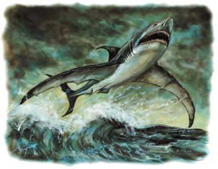

中型魔法兽（跨位面）

| 生命骰： | 4d10+8（30点生命值） |
| 先攻： | +2 |
| 速度： | 60英尺，飞行60英尺（普通），游泳60英尺 |
| 防御等级： | 20（+2敏捷，+8天生），接触12，措手不及18 |
| 基本攻击／擒抱： | +4/+7 |
| 攻击： | 啮咬+7近战 |
| 全力攻击： | 啮咬+7近战 |
| 伤害： | 啮咬1d8+4 |
| 面宽／触及： | 5英尺/5英尺 |
| 特殊攻击： | 伏击，精通攫抓 |
| 特殊能力： | 黑暗视觉60英尺，昏暗视觉 |
| 豁免： | 强韧+6，反射+6，意志+1 |
| 属性： | 力量16，敏捷14，体质14，智力3，感知11，魅力7 |
| 技能： | 躲藏+10，聆听+5，生存+3，游泳+12 |
| 专长： | 警觉，追踪 |
| 地域： | 任意陆地与水域（卡瑟利，盖布，哈迪斯） |
| 组织： | 单独或群猎（2-8只） |
| 挑战等级： | 2 |
| 宝物： | 无 |
| 阵营： | 总是中立邪恶 |
| 进化： | 5-12HD（中型） |
作为严酷环境的产物，飞鲨是高度适应的顶级掠食者，能自空中、陆地或水中发起猎杀。其水中速度远超多数生物，但飞行能力仅属中等。
飞鲨形似巨翼鲨鱼，拥有异常宽大的颌部，如鲨鱼般锋利的牙齿终生持续生长。其灰色皮毛具备绝佳天然伪装，可轻易融入环境。
虽是凶残掠食者，飞鲨仍保有足够生存本能以避开外层位面偶遇的强大存在。
作为贪婪的食客，飞鲨从不放过任何进食机会。日间长途移动时，相较其他大型飞行掠食者更贴地飞行，借植被掩护突袭猎物。战斗中本能地尝试伏击，一旦强韧双颌锁住目标，便会对不幸的猎物进行碾压与撕扯。
飞鲨常采用游击战术，作为天生猎手深知快速突袭是最佳猎杀方式。
伏击（Ambush）（Ex）：当飞鲨对措手不及对手成功发动冲锋攻击时，其啮咬造成双倍伤害。
精通攫抓（Improved Grab）（Ex）：若飞鲨以啮咬命中比自身至少小一级的对手，在造成正常伤害的同时，可藉自由动作尝试发起擒抱（不会引发借机攻击，擒抱加值+7）。若成功压制，可在同一轮发动撕扯。此后可选择正常进行擒抱，或仅用啮咬束缚对手（擒抱检定承受-20罚值，但飞鲨自身不被视为处于擒抱状态）。无论何种情况，后续每轮成功的擒抱检定都会自动造成撕扯伤害。
撕扯（Worry）（Ex）：通过精通攫抓成功压制对手后，飞鲨会剧烈摇晃受害者，直至目标挣脱、飞鲨死亡或受害者丧生为止，每轮均造成啮咬伤害。
技能：因天然伪装，飞鲨在躲藏检定上具有+8种族加值。在进行特殊动作或规避危险的游泳检定中具有+8种族加值，且即使分心或受威胁时也可在游泳检定上取10。